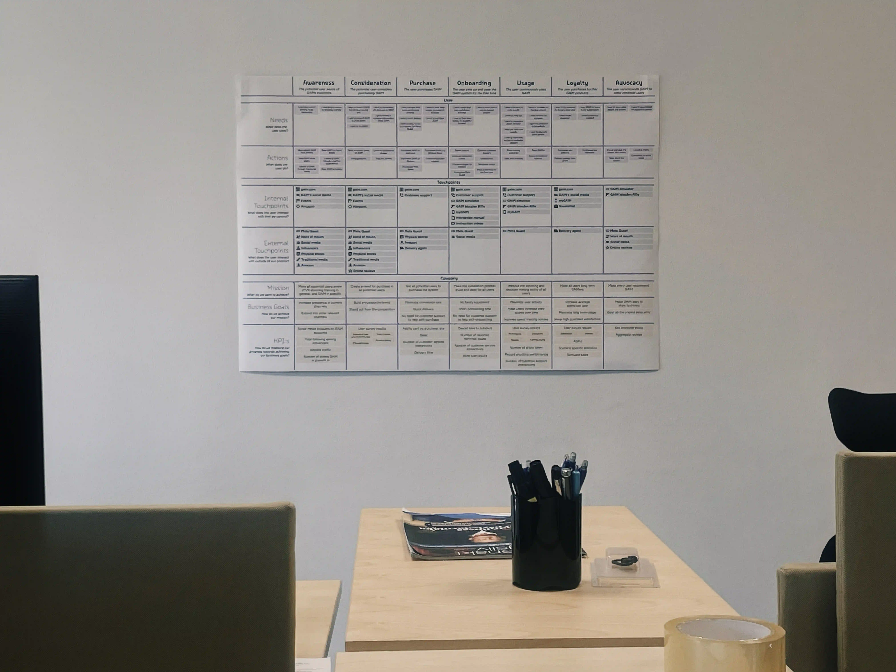
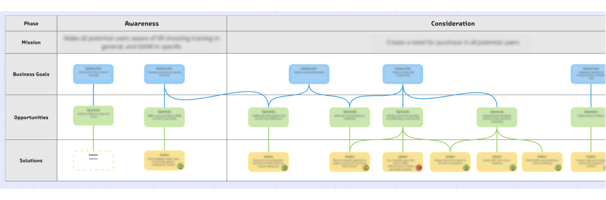
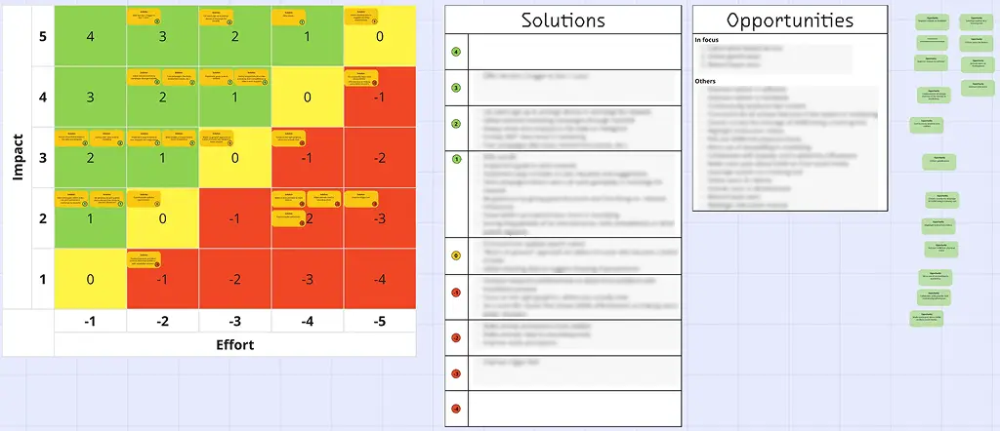
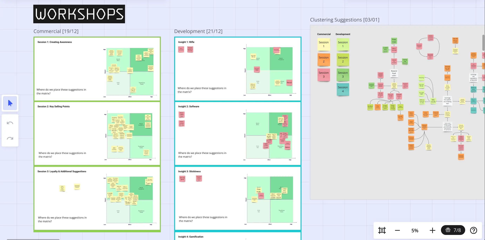
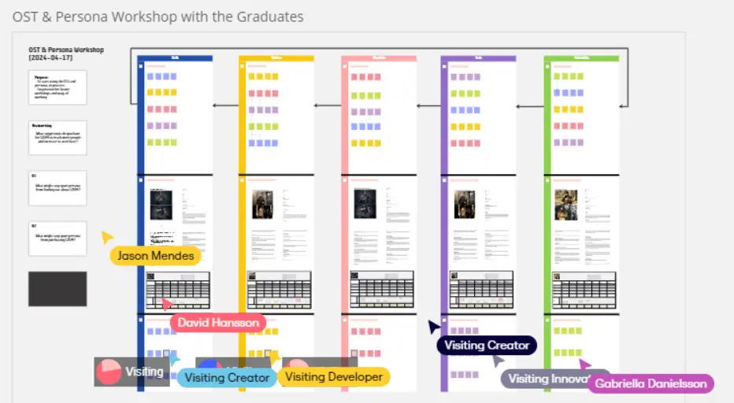
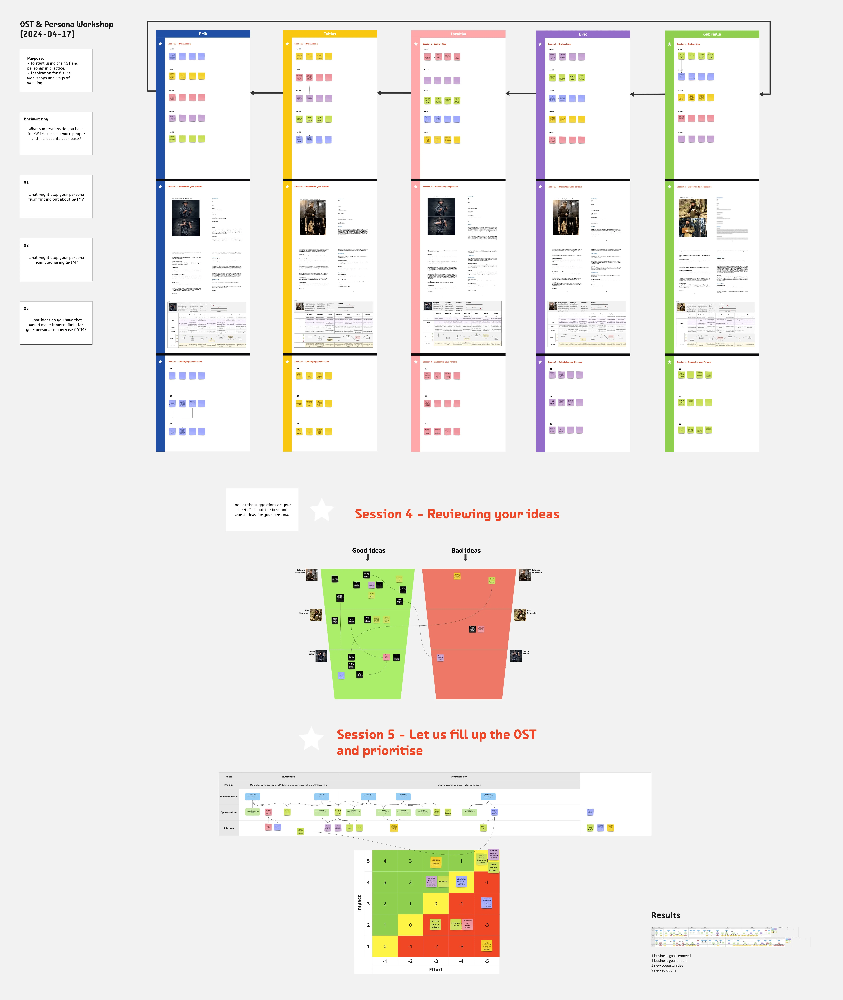
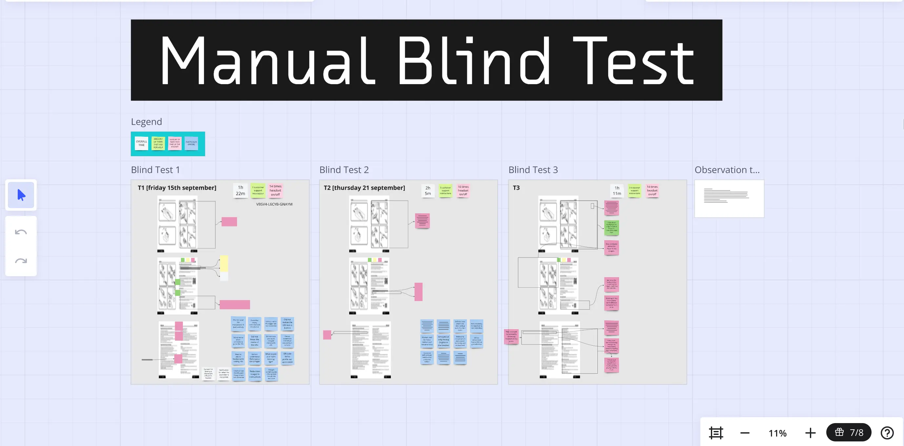
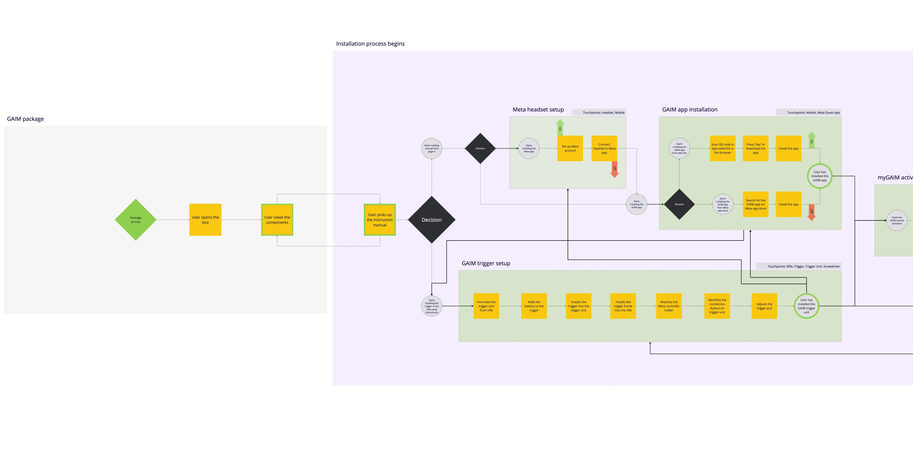
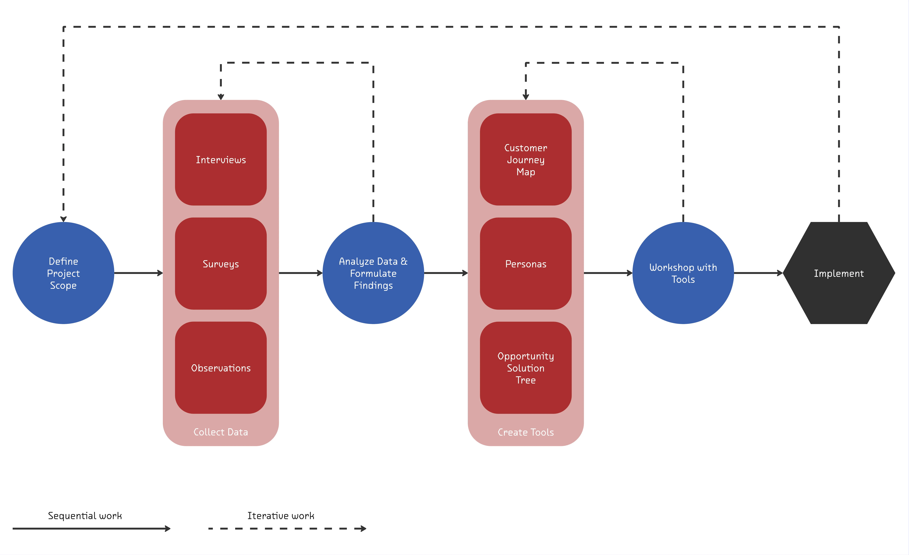
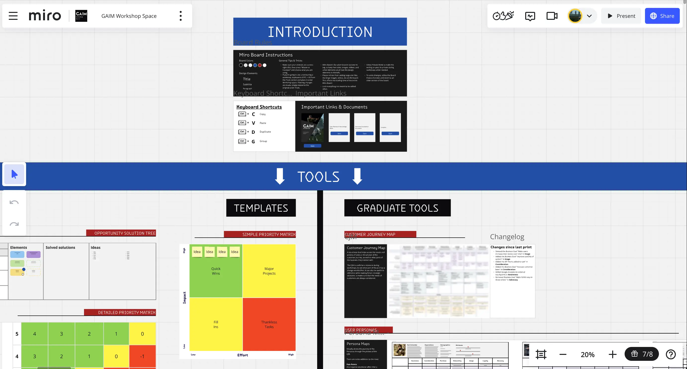

While working on understanding the user behavior at GAIM, I was
also working on a parallel project with the aim to synthesize
concrete business outcomes from the UX Research, needed to be used to drive strategy at GAIM. So the aim became
to align cross-functional teams around Humman-Centered goals.
Research showed us that the CJM and Personas can help
focus on customer needs and improve
decision-making, so our mission was
to operationalize those deliverables. In practice, this meant
using Visual
Frameworks and Ideation Methods to bridge
the gap between user needs and GAIM’s
business objectives.
And demonstrating the use of this strategy by working on
an opportunity that emerged from the research.
My Role
Planning & Executing Ideation Workshops with different teams at GAIM, Designing and communicating the Opportunity Solution Tree to development and marketing teams, Creating User-Flows for the User Manual, Implementing changes in the Manual based on Insights.
Tools
Miro, Dovetail, Jira, Teams.
Team Members and Co-ordinators
01 / Communicating UX Deliverables
Collaborating with the other teams at GAIM to communicate the Insights from the research was a key factor to making employees vary of the importance of being Human-Centric while working on product features.

We placed large-sized prints of the CJM, Personas and Persona Journey Maps in main meeting spaces where most of the shared brainstorming usually took place. This helped employees always have access to user contexts and needs close to them while making key decisions.
02 / Opportunity Solution Tree
The first Visual Framework we built that easily accomodated actionable tasks that emerged during brainstormings or ideation workshops was the Opportunity Solution Tree.

The interconnected OST makes collating insights very visually appealing and easy to keep track of, alongside other project management tools.
The OST was created and used on a Miro Board that was in itself a collection of all deliverables the UX team had created at GAIM.
03 / Prioritization Matrix
The second Visual Framework was the Prioritization Matrix that worked hand-in-hand with the OST. Ideas generated were mapped to an effort-impact grid and dot voting was used to collaboratively identify what was desirable, feasible and viable.

04 / Workshops
We conducted two Workshops with different teams at GAIM. After the creation of the Insights we conducted a cross-functional session using the Themes in them. Participants from marketing, development and sales ideated around user needs to generate some solutions, which became some of the early entries into the OST.

After the creation of the CJM and User Personas, another Workshop was held using these UX Deliverables. Teams were split and asked to ideate while embodying the Personas assigned to them. This brought empathy and specificity to their choices. These Workshops were carried out on live Miro sessions, so that everything was well-documented digitally.


05 / Manual Redesign
One prominent opportunity that emerged on the OST using the Prioritisation Matrix during the second Workshop, was the need to redesign the GAIM User Manual. I took up this task individually as an example to show how this UX workflow could lead to actionable tasks that promote real change.

The redesign happend in multiple iterations and among collaboration with the marketing team. Multiple Blind Tests had been conducted at early stages of the UX Research, whose Insights played a key role during this redesign. Similar Blind Tests were conducted after for every iteration of this redesign.

06 / UX Workflow at GAIM
Through this project at GAIM, a standardization of the UX Workflow had been put in place. Later UX Teams as well as other employees at GAIM, had access to all the project data and processes through an actionable Miro Board which collated all the UX Deliverables with explanations and prompts.

